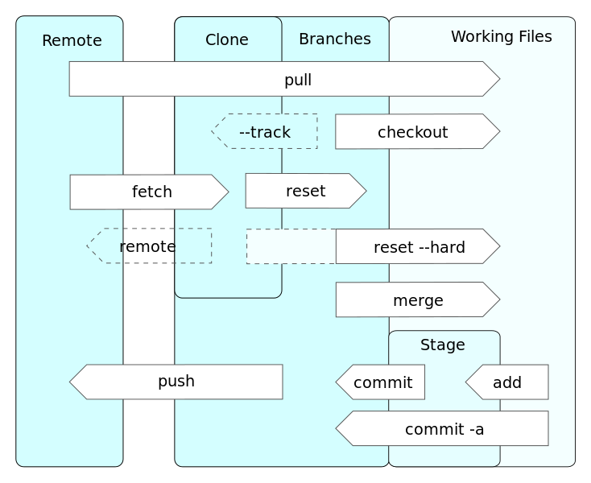

Cheatsheet
Use-cases

Explanation
English: A very brief and incomplete list of the operations shown in the diagram:
git pull
fetches remote changes into the local clone, and merges them into the current working files.
git checkout
replaces the current working files with files from a branch.
git checkout --track
creates a local branch from a remote branch, links them, and replaces the current working files with files from that branch.
git fetch
downloads changes from a remote repository into the local clone
git reset
makes the current branch point to some specific revision or branch.
git reset --hard
makes the current branch point to some specific revision or branch, and replaces the current working files with the files from that branch.
git merge
merges files from a given branch into the current branch.
git push
uploads changes from local branches to the respective remote repositories.
git add
puts current working files into the stage (aka index or cache)
git commit
commits staged changes to a local branch
git commit -a
commits all modified files to a local branch (shorthand for "git add" and "git commit")
git config --list
Liệt kê các cấu hình, cả local và global. Ví dụ kết quả:
core.symlinks=false core.autocrlf=true core.fscache=true color.diff=auto color.status=auto color.branch=auto color.interactive=true help.format=html rebase.autosquash=true http.sslcainfo=C:/Program Files/Git/mingw64/ssl/certs/ca-bundle.crt user.name=Nguyen Van Huyen user.email=huyennv9@cyberspace.vn core.autocrlf=false merge.tool=extMerge mergetool.extMerge.cmd=extMerge "$BASE" "$LOCAL" "$REMOTE" "$MERGED" mergetool.extMerge.trustexitcode=false diff.external=extDiff core.repositoryformatversion=0 core.filemode=false core.bare=false core.logallrefupdates=true core.symlinks=false core.ignorecase=true remote.origin.url=git@source.cyberspace.vn:tksp/ttcd.git remote.origin.fetch=+refs/heads/*:refs/remotes/origin/* branch.master.remote=origin branch.master.merge=refs/heads/master
git config --global <key> <value>
Cấu hình.
git init [folder]
Khởi tạo.
git add <file> ...
Thêm các file cụ thể.
git add .
Thêm tất cả các file.
git add *
Thêm tất cả các file?
git status
Xem trạng thái.
git commit -m "<comment>"
Commit.
git push <remote> <branch>
Push.
git log [-p] [--pretty=oneline]
Xem log.
git reset HEAD <file>
Reset
git remote -v
Remote
git remote rename <old name> <new name>
Đổi tên remote.
git remote add <remote name> <url>
Thêm remote.
git fetch <remote name>
Fetch.
git pull <remote name>
Lấy code từ remote.
git branch [[-d] branch name]
Thêm branch.
git checkout <branch name>
Checkout.
git merge <branch name>
Merge.
git diff --stagedSo sánh.